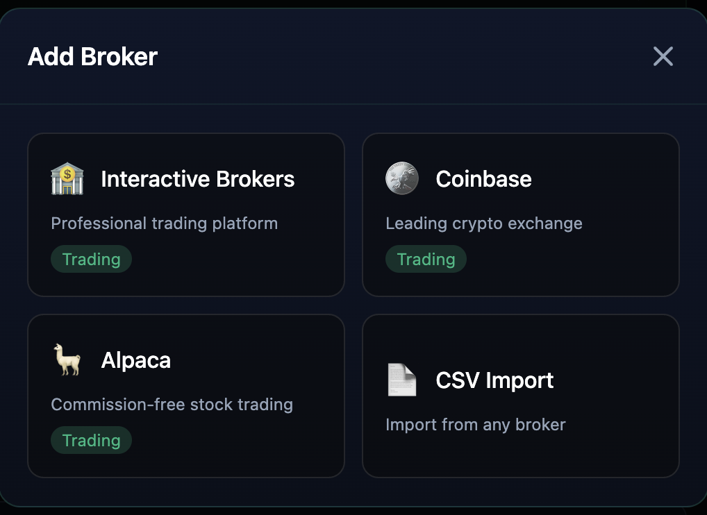

Most investing tools assume you already know what you are doing. Bloom is the opposite: so easy to use that it teaches you the simple things as you go, and you stop feeling lost. So far it is at its best for long-term investing and for short- and long-term bonds.
Take bonds. You tell Bloom how soon you need the money back, and the bond finder lists US Treasuries that fit, next to today's official Treasury yields. Then you just ask. Type "highlight the 3 best treasuries from this list" and Lily, the built-in assistant, marks her picks in the table and explains each one in plain language.
Every recommendation comes with the reason, the main risk, and what would change it — in words a first-time investor can follow.
When no broker is connected, Bloom says so: prices are labelled as estimates worked out from the yield curve, not live quotes.
The bond finder is look-up only, and Bloom runs in a read-only secure mode by default. Nothing there can buy or sell.
Bloom links to the platform you already have. So far that is Interactive Brokers, Coinbase and Alpaca, plus a CSV import that works with any broker. I am working on expanding it to more platforms.

A dashboard tells you what you hold and what it is worth. A screener tells you what matches your criteria today. Neither has any notion of whether the reasoning that put you in a position was sound — and neither gets better as you use it.
Bloom is built around the opposite assumption: that the useful signal is in your own history. Every trade the system takes is recorded with the conditions that triggered it, so patterns in what worked and what did not become queryable rather than remembered.
The edge isn't in the next signal. It's in what the last hundred taught you.
Rather than a single monolithic strategy, Bloom splits the work into agents with narrow responsibilities that pass messages through a central coordinator. Each one can be reasoned about, tested, and replaced independently.
The central coordinator. Routes messages between agents and holds the shared state, so no agent needs to know about any other's internals.
Monitors the watchlist for trading signals using technical analysis — the only agent that looks outward at the market.
Places trades through Interactive Brokers, including position sizing. Isolated deliberately: the component that can move money does one thing.
Tracks performance, identifies patterns across past trades, and generates reports. This is the agent the whole system exists to feed.
Keeping execution as its own isolated agent is a safety decision as much as an architectural one. The surface area that can place an order stays small and explicit, which makes it possible to reason about failure modes that matter more than a missed signal does.
This project is unfinished, and I am writing it up that way on purpose. The infrastructure runs; the self-improvement loop — the part that closes journal findings back into scanner behavior — is the open problem I am working on now. A system that claims to learn from its own trades needs evidence that it actually does, and I do not have that evidence yet.
Closing the loop is the whole remaining question. Getting the journal to produce findings is straightforward; getting those findings to change scanner behavior without overfitting to a short and noisy trade history is not. Market data offers very few independent samples and enormous temptation to read patterns into noise — which makes honest backtesting, not model sophistication, the real constraint.
The next milestone is a validation framework that can distinguish a strategy adjustment that genuinely helped from one that merely fit the past.